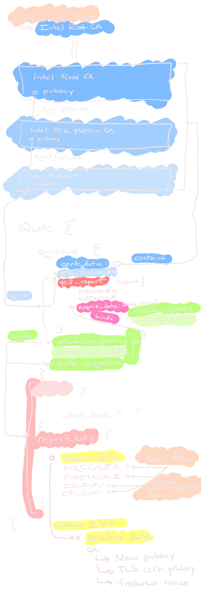

remote attestation
2022-04-12 · 9 min read
Goals #
- The point of Remote Attestation is to prove to a remote client:
- Our software is running inside a genuine Intel enclave.
- The enclave is running a fully up-to-date system at the latest security level.
- The software itself is running a specific, developer-defined version, called an ISV SVN.
- The software is signed by a specific authority, called the Signer Measurement (MRSIGNER).
- The software's initial state (code & data) is exactly as we expect, communicated via a cryptographic summary called the Enclave Measurement (MRENCLAVE).
- (Optional) additional data was present and acknowledged by the enclave when it generated the attestation, called the ReportData.
- This slot can be used to pass info to the attestation verifier, e.g., enclave application pubkeys, freshness nonces, timestamps.
- The size is only 64-bytes, so if you have lots of things to attest to, you'll need to attest to a commitment rather than the data itself
- Once the client decides they can trust the enclave's attestation (according to some configurable policy), they can open a secure channel with the enclave.
- Over the secure channel, the client can issue commands or provision secrets into the enclave. These secrets remain encryped and unintelligible to the outside, untrusted service provider, machine, and OS.
Remote attestation procedure in detail #
Attesting to another local enclave is easy and efficient.
Attesting to a remote client requires a few extra steps:
- The application enclave generates a Report, which includes the various things we want to attest to, described above.
- Ask the local Quoting Enclave (QE) to sign the application enclave's report with its Attestation Key (AK), usually via the Architectural Enclave Service Manager (AESM) API.
- (Optional) The application enclave can verify that the Quote was generated by a trusted Quoting Enclave (QE) on the local machine.
- In theory, this step is optional, since the remote attestation verifier should ultimately reject an invalid Quote. However this step can give the enclave itself assurance that it's talking to a legitimate QE.
- When requesting a Quote, the application enclave can provide a 16-byte nonce to ensure freshness (preventing replay attacks of old quotes).
- From the AESM or Quoting Library, the application enclave should receive a serialized quote and QE Report from their Quote request.
- This QE Report is a Report generated by the Quoting Enclave. The application enclave should check that the Quoting Enclave ID in the QE Report is trustworthy.
- The application should then check that the QE Report's ReportData field contains the value
SHA-256(nonce || quote) || [0; 32]. - Finally, the application enclave should check that the Quote actually contains its own Report.
- (EPID-only) This signed report, called a Quote, is sent to the endorsement service Intel Attestation Services (IAS) who will endorse (read: sign with its cert) the report IFF it believes the Quote is valid.
- This endorsed Quote is now verifiable by anyone that knows the endorsement service's root CA cert.
- The remote Intel-run IAS is the only party that can endorse these EPID Quotes. This makes Intel's service an interactive party in our attestation protocol flow when using EPID Quotes.
- (ECDSA-only) The report is signed by an ECDSA Attestation Key in a Quoting Enclave. The Attestation Key is endorsed by an Attestation Key Cert from the Provisioning Certification Enclave (PCE).
Attestation Key Algorithms #
There are a two-ish different Attestation Key (TODO link) algorithms that each have different tradeoffs and TCB surface.
- ECDSA P256 or ECDSA P384
- simple, but ids are public and linkable. This is not a problem in data centers or confidential computing scenarios.
- Intel Enhanced Privacy ID (EPID)
- complicated, but ids are private and revocations are efficient.
- significant increased protocol complexity.
- Intel verifier is all attestations.
See: sgx_types::sgx_ql_attestation_algorithm_id_t
Remote Attestation Quote Verification #
To help visualize how the chain-of-trust extends from our Trust Root (the Intel SGX Root CA) to the enclave's attested values (usually a TLS cert pubkey), I've made this helpful diagram.
Quickly recapping, the User starts with three trusted objects:
- the Intel SGX Root CA
- the acceptable Quoting Enclave identities, retrieved from the IAS (not depicted)
- the acceptable Application Enclave identities (e.g., MRSIGNER or MRENCLAVE)
The Application Enclave usually provides the Quote to the User as part of setting up a secure transport channel. The User wants to verify the Quote to ensure the enclave is running the expected software.
This particular diagram shows the ECDSA DCAP-QL Quote structure and how each component commits or signs other sub-components. The flow is somewhat different for EPID-based attestation Quotes.

PCK lookup service #
Intel DCAP - Provisioning Certificate Caching Service (PCCS)
GET platform's Provisioning Certification Key (PCK) certs #
The platform is identified by its encrypted Platform Provisioning ID (PPID) and Provisioning Certification Enclave ID (PCE-ID).
GET Current Intel Quoting Enclave (QE) and Quote Verification Enclave (QVE) Identities #
Query the Intel Trusted Services API for current valid Quoting Enclave (QE) identity.
$ curl -v -X GET "https://api.trustedservices.intel.com/sgx/certification/v3/qe/identity"{
"enclaveIdentity": {
"id": "QE",
"version": 2,
"issueDate": "2022-04-12T21:57:18Z",
"nextUpdate": "2022-05-12T21:57:18Z",
"tcbEvaluationDataNumber": 12,
"miscselect": "00000000",
"miscselectMask": "FFFFFFFF",
"attributes": "11000000000000000000000000000000",
"attributesMask": "FBFFFFFFFFFFFFFF0000000000000000",
"mrsigner": "8C4F5775D796503E96137F77C68A829A0056AC8DED70140B081B094490C57BFF",
"isvprodid": 1,
"tcbLevels": [
{
"tcb": {
"isvsvn": 6
},
"tcbDate": "2021-11-10T00:00:00Z",
"tcbStatus": "UpToDate"
},
{
"tcb": {
"isvsvn": 5
},
"tcbDate": "2020-11-11T00:00:00Z",
"tcbStatus": "OutOfDate"
},
{
"tcb": {
"isvsvn": 4
},
"tcbDate": "2019-11-13T00:00:00Z",
"tcbStatus": "OutOfDate"
},
{
"tcb": {
"isvsvn": 2
},
"tcbDate": "2019-05-15T00:00:00Z",
"tcbStatus": "OutOfDate"
},
{
"tcb": {
"isvsvn": 1
},
"tcbDate": "2018-08-15T00:00:00Z",
"tcbStatus": "OutOfDate"
}
]
},
"signature": "1750f7e5997a8cb5ba2073f7a4312e43f5771a409e0610b20428dffebe51e53a6eadfb5691045b0819b29754dd6f5cfd20837b0e6f76e2307146dd3deb5203be"
}Likewise, there's a similar endpoint for looking up the Quote Verification Enclave (QVE) identity:
$ curl -v -X GET "https://api.trustedservices.intel.com/sgx/certification/v3/qve/identity"For both responses, the "signature" field contains a signature over the "enclaveIdentity" body (hex-encoded, no whitespace, very canonical lmao) using the TCB Info Signing Key.
Determining if an SGX Enclave identity matches the standard Quoting Enclave Identity #
- Retrieve standard Quoting Enclave Identity from the Intel SGX Provisioning Certification Service (PCS) and verify that it is a valid structure issued by Intel.
- Perform the following comparison of SGX Enclave Report against the retrieved QE Identity:
- Verify if MRSIGNER field retrieved from SGX Enclave Report is equal to the value of mrsigner field in QE Identity.
- Verify if ISVPRODID field retrieved from SGX Enclave Report is equal to the value of isvprodid field in QE Identity.
- Apply miscselectMask (binary mask) from QE Identity to MISCSELECT field retrieved from SGX Enclave Report. Verify if the outcome (miscselectMask & MISCSELECT) is equal to the value of miscselect field in QE Identity.
- Apply attributesMask (binary mask) from QE Identity to ATTRIBUTES field retrieved from SGX Enclave Report. Verify if the outcome (attributesMask & ATTRIBUTES) is equal to the value of attributes field in QE Identity.
- If any of the checks above fail, the identity of the enclave does not match QE Identity published by Intel.
- Determine a TCB status of the Quoting Enclave:
- Retrieve a collection of TCB Levels (sorted by ISVSVNs) from tcbLevels field in QE Identity structure.
- Go over the list of TCB Levels (descending order) and find the one that has ISVSVN that is lower or equal to the ISVSVN value from SGX Enclave Report.
- If a TCB level is found, read its status from tcbStatus field, otherwise your TCB Level is not supported.
GET TCB info for a given CPU family/platform #
The platform is identified by an FMSPC (Family, Model, Stepping, Platform Type, Customized SKU) hex-encoded 6-byte array.
curl -v -X GET "https://api.trustedservices.intel.com/sgx/certification/v3/tcb?fmspc={}"{
"tcbInfo":{
"version":2,
"issueDate":"2019-07-30T12:00:00Z",
"nextUpdate":"2019-08-30T12:00:00Z",
"fmspc":"000000000000",
"pceId":"0000",
"tcbType": 0,
"tcbEvaluationDataNumber": 2,
"tcbLevels":[
{
"tcb":{
"sgxtcbcomp01svn":0,
"sgxtcbcomp02svn":0,
"sgxtcbcomp03svn":0,
"sgxtcbcomp04svn":0,
"sgxtcbcomp05svn":0,
"sgxtcbcomp06svn":0,
"sgxtcbcomp07svn":0,
"sgxtcbcomp08svn":0,
"sgxtcbcomp09svn":0,
"sgxtcbcomp10svn":0,
"sgxtcbcomp11svn":0,
"sgxtcbcomp12svn":0,
"sgxtcbcomp13svn":0,
"sgxtcbcomp14svn":0,
"sgxtcbcomp15svn":0,
"sgxtcbcomp16svn":0,
"pcesvn":0
},
"tcbDate":"2019-07-11T12:00:00Z",
"tcbStatus": "UpToDate",
"advisoryIDs": ["INTEL-SA-00079", "INTEL-SA-00076"]
}
]
},
"signature":"e45785756a06abfabb2eb6481c3b67c8a0729142e10e06e6415948a88e2f2e773bb2ff9f513ec32e4c5afb15883ab653393f8082f69b69ba19a2a21e3eefee7c"
}Determine the status of a TCB level for a platform #
We use this API to verify that a given platform's current TCB is not vulnerable or revoked.
- Retrieve FMSPC value from SGX PCK Certificate assigned to a given platform.
- Retrieve TCB Info matching the FMSPC value.
- Go over the sorted collection of TCB Levels retrieved from TCB Info starting from the first item on the list:
- Compare all of the SGX TCB Comp SVNs retrieved from the SGX PCK Certificate (from 01 to 16) with the corresponding values in the TCB Level. If all SGX TCB Comp SVNs in the certificate are greater or equal to the corresponding values in TCB Level, go to 3.b, otherwise move to the next item on TCB Levels list.
- Compare PCESVN value retrieved from the SGX PCK certificate with the corresponding value in the TCB Level. If it is greater or equal to the value in TCB Level, read status assigned to this TCB level. Otherwise, move to the next item on TCB Levels list.
- If no TCB level matches your SGX PCK Certificate, your TCB Level is not supported.
Misc #
Intel Trusted Services API Developer Dashboard